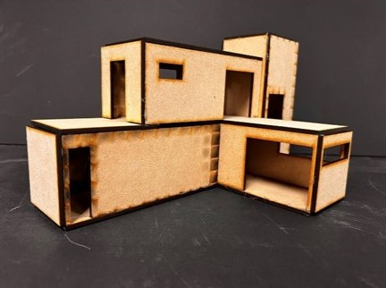

Velkommen til Elvebakken KDA!
Programfag
Vis alle >


Kunst og skapende
I Kunst og skapende lærer man mye nyttig om kunst, både hvordan man lager det, og hvorfor det er viktig
Se mer →Foto og grafikk
Foto og grafikk er et praktisk fag der du kan lære mange forskjellige grafiske teknikker, og kan lage din egen kunst
Se mer →

Arkitektur og samfunn
Arkitektur og samfunn er et spennende praktisk fag der du lærer mye, blandt annet hvordan arkitektur, natur og samfunn gjensidig påvirker hverandre
Se mer →Design
I Design lærer du mye nyttig, blandt annet hvordan man bruker ulike materialer og teknikker i produktutvikling
Se mer →